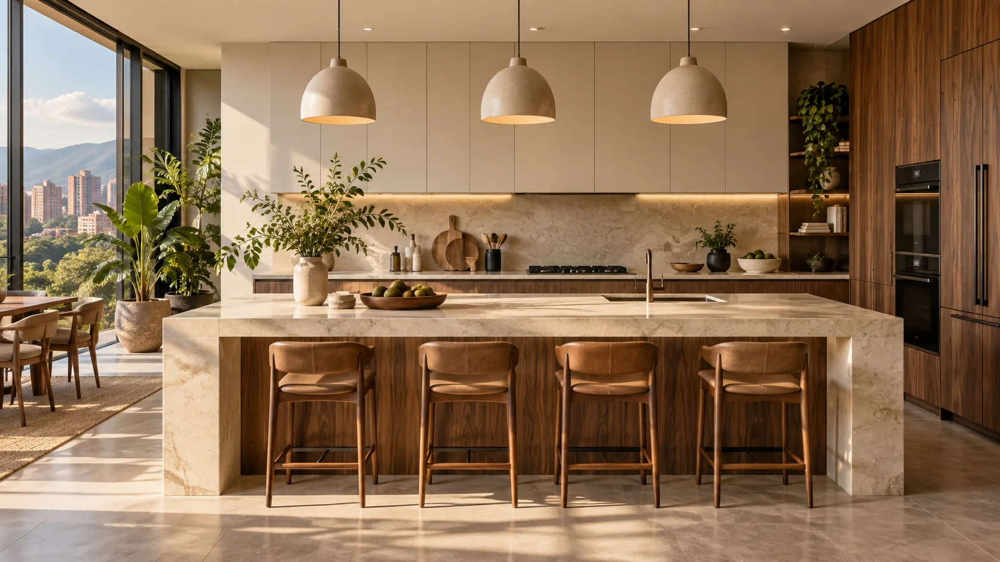
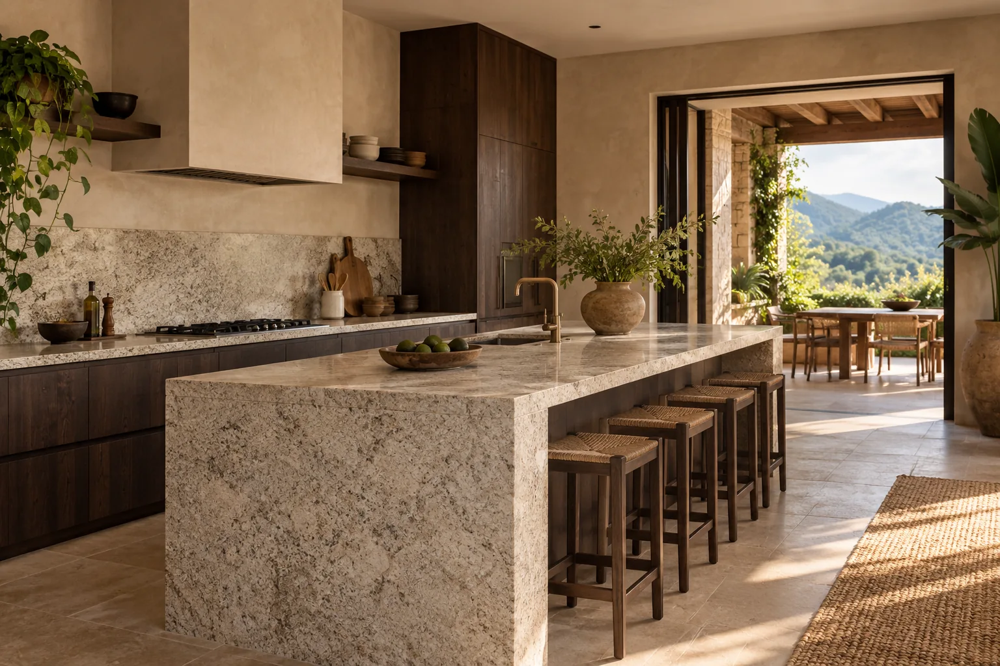
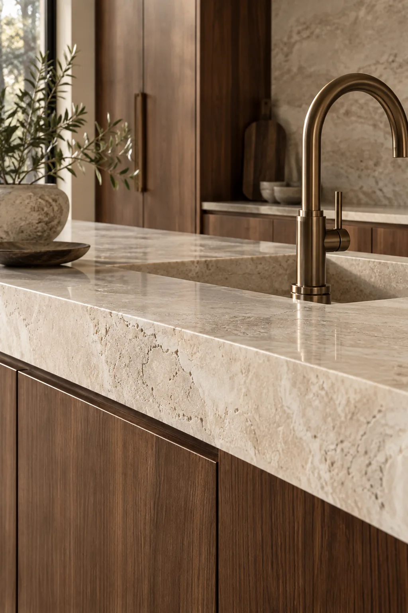

Cocinas integrales
Soluciones pensadas alrededor de tu espacio, tus necesidades y tu estilo.

Cocinas integrales y mesones en mármol, granito y superficies contemporáneas. Diseñamos, fabricamos e instalamos en Ibagué.
Calidad que nuestros clientes recomiendan.
Hecho en IbaguéCreemos en espacios que se sienten bien y funcionan mejor. Por eso reunimos diseño, materiales y ejecución en cada proyecto.
Conoce lo que hacemosCada cocina empieza con una idea. La convertimos en un espacio pensado alrededor de tu hogar.
Las imágenes de esta sección son ilustrativas. Próximamente, fotografías de proyectos reales de Granimar.


De la idea inicial al último ajuste, cuidamos cómo se ve y cómo se vive cada espacio.
Soluciones pensadas alrededor de tu espacio, tus necesidades y tu estilo.
Fabricación e instalación de superficies con acabados precisos.
Materiales naturales para espacios con carácter y uso cotidiano.
Quartzone y materiales sinterizados para proyectos actuales.
Texturas, tonos y superficies que le dan personalidad a cada cocina. Te ayudamos a encontrar la opción adecuada para tu proyecto.
Elegancia natural y una expresión distinta en cada pieza.
Resistencia y carácter para acompañar la vida diaria.
Una alternativa contemporánea para cocinas actuales.
Superficies modernas para una propuesta de diseño precisa.
Desde la elección del material hasta el último ajuste de la instalación, cada etapa importa. Queremos entregar espacios que se vean bien y estén hechos para disfrutarlos.
Un camino claro para convertir lo que imaginas en un espacio para vivir todos los días.
Escríbenos por WhatsApp y comparte lo que tienes en mente.
Revisamos espacio, materiales, estilo y necesidades.
Preparamos cada elemento buscando precisión y calidad.
Llevamos el proyecto hasta su resultado final.
56 reseñas en Google
Resumen de las opiniones facilitadas por Granimar; no son citas textuales.
Destaca el profesionalismo, la eficiencia, la calidad de los materiales y el acompañamiento desde el proyecto hasta la instalación.
Jacky OsborneLe encantaron el trabajo, los detalles y el resultado de su cocina. Lo calificó 10/10.
Estefania GonzalezResalta la atención profesional, el trabajo en mármol, los acabados, el cumplimiento y el cuidado de los detalles.
Julio MarinCuéntanos qué quieres hacer y recibe atención directa por WhatsApp.
Cotizar por WhatsApp Imagen ilustrativa